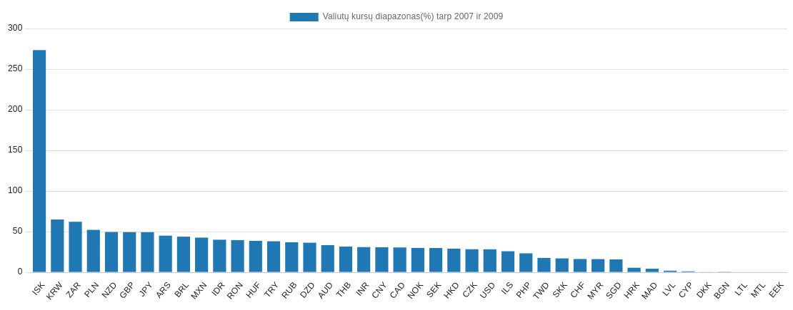
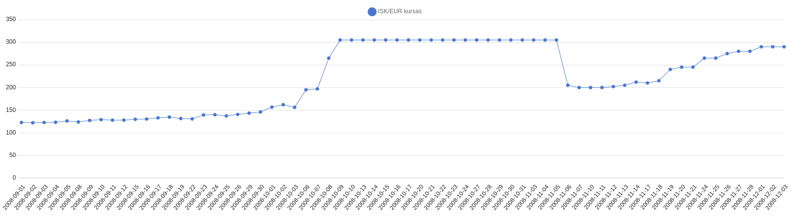

-
Didžiausi pokyčiai tarp stebėjimų
Pradėkime nuo drastiškiausių valiutų pokyčių. Jos mums padės suvokti, kokie išoriniai veiksniai, gali padaryti prasmingą įtaką valiutų kursams.
1 Lentelė: Ryškiausi pokyčiai tarp gretimų stebėjimų.
| Valiuta |
Data |
Pradinė vertė(eurais) |
Kaina po pokyčio |
| ISK |
2018-02-01 |
125.01 |
290.00 |
| DZD |
2003-06-17 |
44.82 |
93.11 |
| ISK |
2008-11-06 |
205 |
305 |
| TRY |
2021-12-21 |
14.71 |
20.04 |
| CHF |
2015-01-15 |
1.03 |
1.2 |
| PHP |
2001-01-19 |
44.71 |
51.53 |
| BRL |
2000-02-14 |
1.75 |
2.01 |
| ARS |
2002-03-27 |
2.69 |
3.06 |
| RUB |
2014-12-17 |
82.17 |
91.52 |
| TRY |
2021-12-23 |
12.65 |
14.07 |
Tarp šio dešimtuko noriu iškirti tris pavyzdžius:
- Filipinų Pesas nuvertėjo 2001 metų sausio 19 mažduag tuo metu, kai vyko tris dienas trukusi antroji EDSA revoliucija, kurio metu buvo nuversta tuometinė valdžia.
- 2014 metais JAV ir Europos sankcijos Rusijai dėl jos neteisėtų karinių veiksmų Ukrainoje sudavė stiprų smūgį rublio kursui, kurį taip pat matome lentelėje.
- 2002-03-27 Argentinos Peso ryškus nuvertėjimas įvyko Argentinos didžiosios depresijos(kelis metus trukusio laikotarpio) metu.
Išvada: valiutų kursus trumpalaikius pokyčius, gali įtakoti begalė politinių faktorių, kurių eknominiais duomenimis grįstas modelis gali neįskaičiuoti.
Valiutų kursai ir 2008 krizė

1 grafikas: Valiutų kursų diapazonas(%) tarp 2007 ir 2009 metų
Kaip matome, labiausiai 2008 paveikta buvo Islandijos Krona(kalbant apie ryškiausią pokytį). Todėl paanalizuokime šią valiutą toliau.

2 grafikas: Islandijos Kronos vertė, lyginant su Euru 2008 metais
Islandijos Kronos ryškų nuvertėjimą nulėmė komercinių bankų bankrotas.
Trys didžiausi Islandijos bankai, kurių bendras turtas seikė beveik 900% BVP ir sudarė virš 90% bankų sektoriaus, bankrutavo.
Šią finansinę katastrofą nulėmė labai daug faktorių, tačiau dažniausiai minimos šių priežasčių grupės: 1. neatsakinga bankų veikla ir 2. Nelegali veikla/sukčiavimas
Išvada: sukčiavimas/neatsakinga veikla gali turėti dideles finansines pasekmes. Taigi sukčiavimo detekciją būtų labai gerai įtraukti į finansinius modelius.
- Patikrinti koks yra sąryšis tarp valiutų kursų ir PPP, GDP, CPI bei darbo užmokesčio.
- Ištirti, kaip minėtieji sąryšiai kito einant laikui, ir, ar buvo paveikti ekonominių šokų(2008 krizė, COVID, karas Ukrainoje).
- Ištirti minėtų sąryšių išimtis.